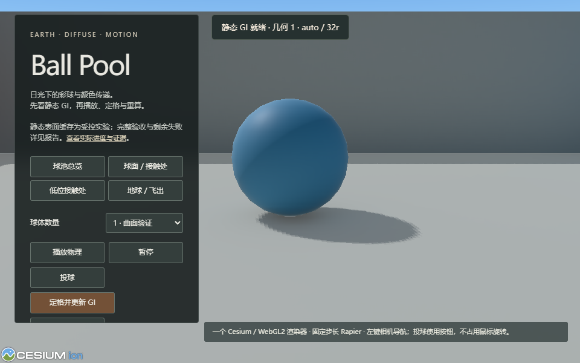
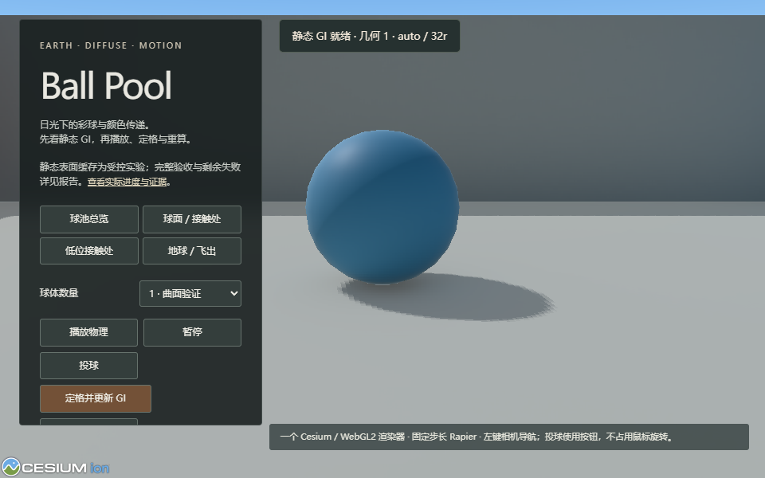
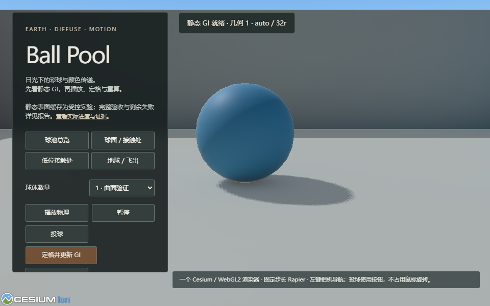
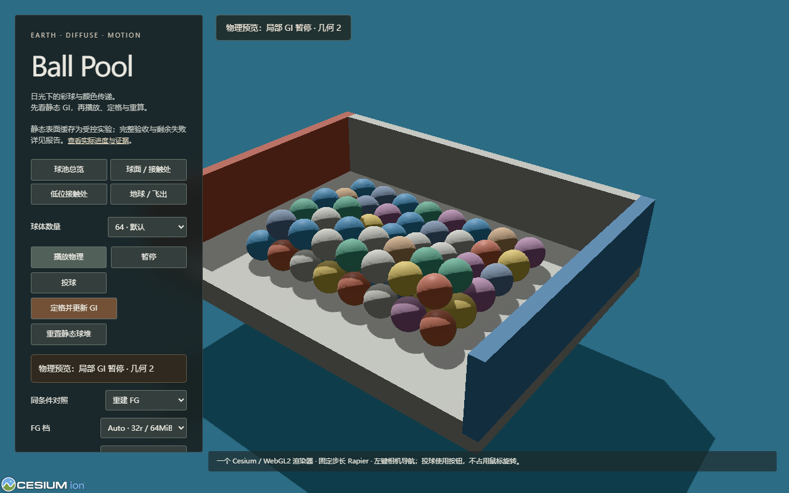
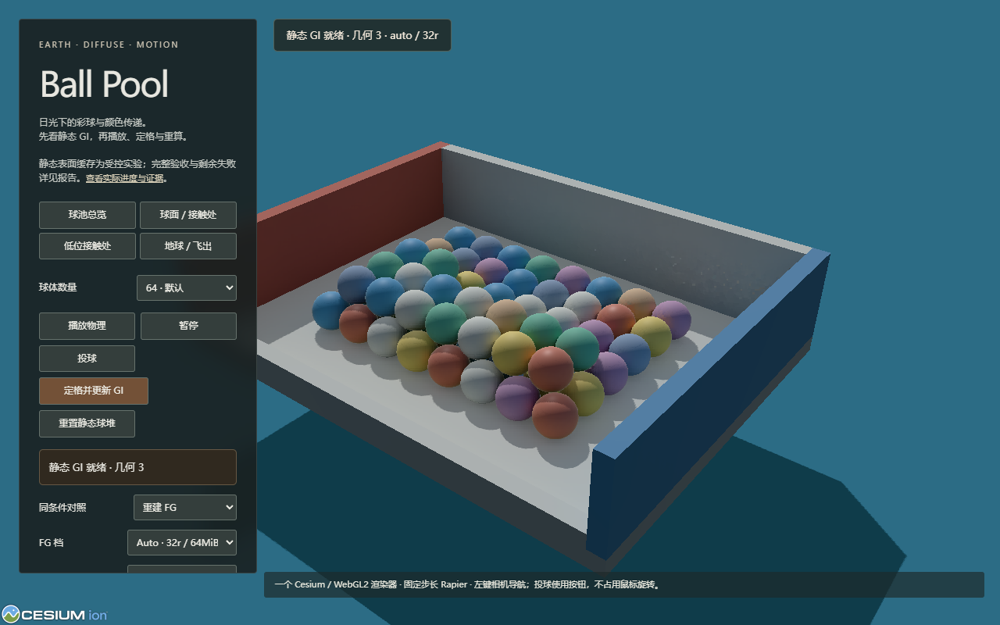

打开实验缓存球池 · 旧起点对照 · 用户进度报告 · 合同与范围
正式验收正在运行。缓存保持 experimental；原32r、16r与改灯失败不因新模块通过而消失。附加预算仍为64MiB。



全部必需状态与子进程 · legacy源项/oracle · physical源项/oracle · 即时60案例 · 缓存60案例、SE与回退 · 稳态与完整更新成本 · 有限轮次与表面参考 · 竞态/资源/销毁 · 桌面Auto
完整legacy逐射线gzip · 完整physical逐射线gzip · 原文件/压缩文件SHA · 仅汇总器更正；GPU未重跑


交互阶段、generation与资源证据 · 正常PBR对照条件 · 原R9诊断色存档（不作正常PBR像素对比） · 实际显示像素18/60失败